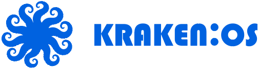

Inbox i përbashkët
Website chat, Instagram dhe Messenger në një rrjedhë, me kanalet e lidhura për demonstrimin tuaj.

ITD LABS / KRAKEN COMMUNICATIONS
Bisedat, kontaktet dhe hapi i radhës — me kontekst të përbashkët për ekipin.
 Pamje nga prezantimi i produktit
Pamje nga prezantimi i produktitWebsite chat, Instagram dhe Messenger në një rrjedhë, me kanalet e lidhura për demonstrimin tuaj.
AI dhe ekipi punojnë me të njëjtën histori. Përcaktohen pronësia, miratimet dhe momenti i ndërhyrjes.
Kontakti, ndjekja dhe oferta qëndrojnë pranë bisedës, pa humbur kontekstin.
Pamje nga prezantimi i produktit. Modulet dhe kanalet e disponueshme varen nga konfigurimi, lejet dhe integrimet e miratuara.